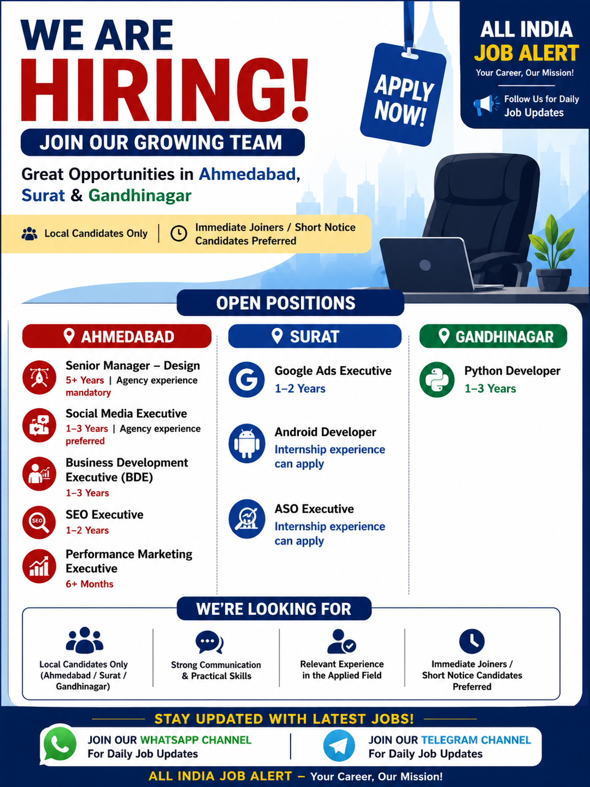

📍 Job Locations: Ahmedabad, Surat & Gandhinagar, Gujarat
💼 Job Type: Private Jobs / Full Time
👨💼 Experience: Fresher to Experienced depending on position
📧 Application Mode: Email
📅 Recruitment: 2026
Are you looking for the latest private jobs in Gujarat? Multiple job opportunities are currently available in Ahmedabad, Surat and Gandhinagar for candidates from different professional backgrounds. The current openings include positions in design, social media, business development, SEO, performance marketing, Google Ads, Android development, ASO and Python development.
These vacancies can be suitable for candidates who are searching for private-sector employment opportunities in Gujarat. Depending on the position, candidates with relevant experience as well as internship-level experience may be considered. Local candidates from Ahmedabad, Surat and Gandhinagar are preferred according to the available recruitment information.
Candidates who are interested in these opportunities should carefully check the position, required experience and location before applying. Applicants should also keep an updated resume ready and provide accurate information about their current location, total experience, current CTC, expected CTC and notice period.
| Location | Position | Experience |
|---|---|---|
| Ahmedabad | Senior Manager – Design | 5+ Years |
| Ahmedabad | Social Media Executive | 1–3 Years |
| Ahmedabad | Business Development Executive (BDE) | 1–3 Years |
| Ahmedabad | SEO Executive | 1–2 Years |
| Ahmedabad | Performance Marketing Executive | 6+ Months |
| Surat | Google Ads Executive | 1–2 Years |
| Surat | Android Developer | Internship Experience Can Apply |
| Surat | ASO Executive | Internship Experience Can Apply |
| Gandhinagar | Python Developer | 1–3 Years |
Several positions are available in Ahmedabad for candidates interested in design, social media, business development, SEO and digital marketing. These roles can provide opportunities for professionals who already have relevant experience and practical knowledge of their respective fields.
The Senior Manager – Design position requires more than five years of experience and is suitable for experienced design professionals. Agency experience is mentioned as mandatory for this position. Candidates should have a strong understanding of design concepts, team coordination, project handling and client requirements.
The Social Media Executive position requires approximately one to three years of experience. Agency experience is preferred. Candidates applying for this position should have knowledge of social media platforms, content planning, campaign coordination, audience engagement and basic analytics.
The Business Development Executive position is suitable for candidates with one to three years of experience. BDE professionals generally work on business development, lead generation, client communication, follow-ups and maintaining relationships with potential customers.
The SEO Executive position requires around one to two years of experience. Candidates should have a basic understanding of search engine optimization, keyword research, on-page optimization, off-page activities, website analysis and search performance.
The Performance Marketing Executive position requires at least six months of experience. Candidates interested in this role should understand digital advertising, campaign monitoring, performance analysis and online marketing activities.
Candidates searching for jobs in Surat can apply for openings in Google Ads, Android development and ASO. These positions can be suitable for candidates who want to develop their careers in digital marketing, mobile application development and app-store optimization.
The Google Ads Executive position requires approximately one to two years of experience. Candidates should have knowledge of Google advertising platforms, campaign setup, keyword targeting, performance monitoring and basic advertising analytics.
The Android Developer opportunity is also available in Surat. Candidates with internship experience can apply according to the recruitment information. Applicants should have a basic understanding of Android development and should be comfortable working with mobile application development tools and technologies.
The ASO Executive position is another opportunity available in Surat. Internship-level candidates can also apply. ASO professionals generally work on improving application visibility in app stores through keyword optimization, app descriptions, competitor research and performance analysis.
A Python Developer position is available in Gandhinagar for candidates with approximately one to three years of experience. This opportunity can be suitable for developers who have practical knowledge of Python programming and software development.
Candidates applying for the Python Developer role should have a good understanding of Python programming concepts and practical development experience. Knowledge of databases, APIs, web development frameworks or other related technologies can also be useful depending on the actual project requirements.
Candidates who meet the required experience for the respective position can apply. Since the available vacancies cover different departments, the eligibility requirements vary from one position to another.
Experienced professionals can apply for senior positions, while candidates with one to three years of experience can consider executive-level opportunities. Candidates with internship experience may also be eligible for selected Android Developer and ASO positions.
The recruitment information specifically mentions preference for local candidates from Ahmedabad, Surat and Gandhinagar. Immediate joiners and candidates who can join within a short notice period may also have an advantage during the shortlisting process.
The exact selection process may vary depending on the company and position. Generally, candidates may first go through resume screening followed by a phone or online discussion. Shortlisted candidates may then be invited for a technical, practical or HR interview.
Candidates should be prepared to explain their previous experience, responsibilities, skills and achievements. Technical candidates should revise the important concepts related to their respective field before attending the interview.
Candidates are requested to provide complete and accurate information while applying. Providing these details can help the recruitment team understand the candidate's profile and contact shortlisted applicants.
Interested candidates can send their updated profile to the following recruitment email address:
nitya.recruitment24@gmail.com
While sending your resume, mention the position you are applying for in the email subject. Also include your current location, total experience, current CTC, expected CTC and notice period.
Example Email Subject:
Application for SEO Executive – Ahmedabad
or
Application for Python Developer – Gandhinagar
Before sending your application, carefully check your resume and make sure your contact information is correct. Your resume should clearly mention your education, work experience, technical skills and previous responsibilities.
Candidates should apply only for positions that match their skills and experience. Avoid sending incomplete information or incorrect experience details because the recruitment team may verify the information during the selection process.
If you are an immediate joiner or have a short notice period, mention this clearly in your application. Candidates who are currently located in Ahmedabad, Surat or Gandhinagar should also mention their current location.
The listed vacancies are available in Ahmedabad, Surat and Gandhinagar, Gujarat.
Senior Manager – Design, Social Media Executive, Business Development Executive, SEO Executive and Performance Marketing Executive positions are listed for Ahmedabad.
Google Ads Executive, Android Developer and ASO Executive positions are listed for Surat.
A Python Developer position requiring approximately one to three years of experience is listed for Gandhinagar.
Most listed positions require experience. However, internship experience can be considered for selected Android Developer and ASO Executive positions according to the available recruitment information.
The recruitment information mentions that local candidates from Ahmedabad, Surat and Gandhinagar are preferred.
Send your updated resume along with your current location, total experience, current CTC, expected CTC and notice period to nitya.recruitment24@gmail.com.
Yes. Immediate joiners or candidates with a short notice period are preferred according to the available information.
This job information has been prepared from the recruitment information provided in the source post. Candidates should independently verify the vacancy, employer, salary, job location, selection process and employment terms before accepting any offer.
All India Job Alert does not charge candidates for job applications. Never pay money to anyone in exchange for a job, interview, selection or appointment letter.
Get the latest private jobs, government jobs, IT jobs, engineering jobs, construction jobs, marketing jobs, developer jobs and other recruitment updates.
📲 Join WhatsApp Channel